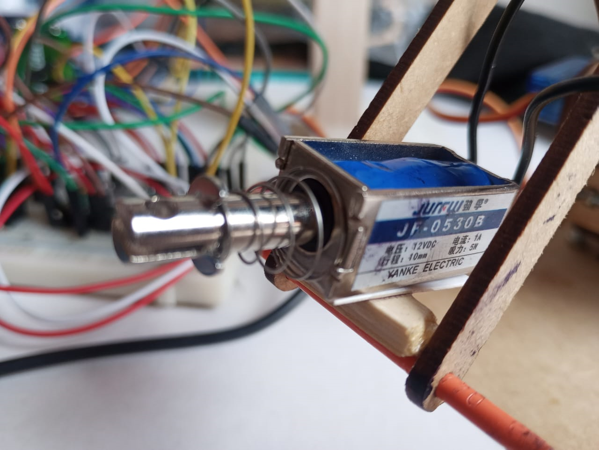

El electroimán se activa cuando el brazo robótico se posiciona en la ubicación del objeto detectado. Una vez que el objeto es atraído y asegurado, el brazo se mueve hacia la zona de destino. Al llegar, el electroimán se desactiva, liberando el objeto en la ubicación deseada.
Este proceso se controla a través de la Raspberry Pi Pico W, que gestiona la activación y desactivación del electroimán en sincronización con el movimiento del brazo.

Este mecanismo permite un manejo eficiente de objetos metálicos, optimizando la automatización del proceso de recolección y colocación dentro del sistema robótico.